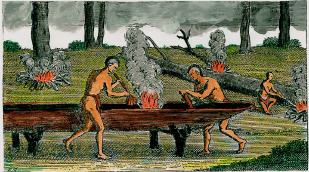
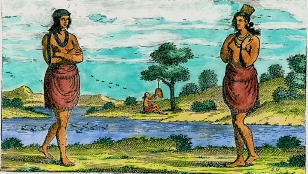
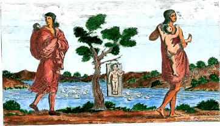

|
|
|
Close Help | ||||||||||||||
|
WELCOME TO THE WICOCOMICO |
|
MENU
History |
PLEASE BE ADVISED THE FOLLOWING EXCERPT'S ARE FROM THE BOOK "WICOCOMICO INDIAN
NATION OF THE POWHATAN EMPIRE" "THE TAPP FAMILY NATIVE AMERICAN HERITAGE" AND
IS COPYRIGHTED BY THE WICOCOMICO INDIAN NATION INC. USE OF THE FOLLOWING MATERIAL
WITHOUT PERMISSION MAY RESULT IN PERSECUTION FOR VIOLATING COPYRIGHT LAWS.
Our intent is to trace the Wicocomico from the earliest days until 1719. Information concerning the Wicocomico after 1719 will not be released until the Wicocomico submits petition documents to the BIA for recognition. All the information has been verified from the original sources that are available. Speculation or assumptions will be stated as such. ENGLISH ARRIVAL: SCOUTING FOR A SETTLEMENT After an earlier skirmish with the Indians at Cape Henry, the three boats entered the James River on or about May 4th, 1607. After scouting the river the English found the place they thought was a suitable on May 13th 1607, an island in Pasaheagh country without native habitation. The island could easily be defended and with sufficient deep water near the shore to tie down the three ships. However near by was a mosquito infested swamp, and the water in the James turned brackish during the summer months. It wasn't until later they realized the mistake. CAPT JOHN SMITH'S EXPLORATION OF THE MD AND VA EASTERN SHORE.JUNE 2-JULY 21, 1608. " Passing along the coast searching every inlet and bay fit for harbor and habitations...seeing many isles in the midst of the bay, we bore up for them. But ere we could obtain them, such an extreme gust of wind, rain, thunder, and lighting happened that with great danger we escaped unmerciful raging of that ocean like water. The highest land on the main, yet it was but low, we called Keale's Hill, and these uninhabited isles Russell's Isles.From "The Generall Historie of Virginia, New-England, and the Summer Isles." By Capt John Smith. Smith's exploration took place in what we know today as Maryland and Virginia, on the east side of Chesapeake Bay. In Maryland Smith encountered the Maryland Wicocomico.Based on recent research, the Maryland Wicocomico and Virginia Wicocomico may be connected. This possibility is discussed in later chapters. CAPT SMITH'S SECOND EXPEDITION: VIRGINIA SHORE JULY 24-SEPTEMBER 7, 1608. " In the discovery of the Rappahannock River, they were kindly received by the people of Maraughacund. Here they met an old friend and acquaintance, one MOSCO, a lusty INDIAN OF WIGHCOCOMOCE (WICOCOMICO)on the River Patomack (Potomac). They supposed him some Frenchman's son because of his thick black bushy beard, and the Indians seldom have any at all. And he was not a little proud of this, and to see so many of his countrymen. He was very offcious and useful to the English; they advised them by all means not to pass over to Rappahanocks who would certainly kill them for being friends with the Maraughacunds, who had lately stolen three of their King's women. But thinking, he only said this to secure their trade to his friends, they crossed the river to the Rappahanocks.There under the pretence of trade, they were invited up to Rappahanock Creek, where they had laid an ambush, and after a smart skirmish in which many Indians were slain and wounded, the English came off the victors without the least hurt. Having driven them into the woods, they seized three or four canoes, full of commodities, which with some arrows, they ahd gathered up, they presented to MOSCO for his kindness. Under he on his part, received them in the most triumphant manner,and in martial Order Under Arms, that he could procure of the Maraughaacunds".From The Generall Historie of Virginia, New England, and the Summer Isles. By Capt John Smith. During Capt Smith's second expedition, he mentions the Wighcocomoco of Virginia, being located on the Patawomek River (Potomac River). The actual location of the Wicocomico village was at the end and slightly north of the Little Wicomico River. According to Stephen Potter, the Wicocomico King's village was at the end and slightly north of the Little Wicomico River and his subjects had a village close to the mouth and south of the Little Wicomico called Cinquck. This is the first mention of the Wicocomico. One has to question the validity of this expedition being his first on the shores of Virginia. His comments about meeting "Mosco" an old friend from the Wighcocomoco tends to imply they were acquainted before, indication that he had made some type of trip through the area prior to this expedtion. Smith also mentioned that Mosco was thought to be part French because of his thick black beard. I personally believe that Mosco is part Spanish. One has to keep in mind that the Spanish were in the area in 1525 and later. My personal thoughts on the influence of the Spanish in the area will be discussed in a separate chapter. The following is an excerpt from the "History of the Discovery and Settlement of Virginia" by William Stith one of the Governors of William and Mary College. "At this time also Captain Raleigh Croshaw was in the Patowmack River (Potomac River) trading in a small bark, commanded by Capt Spilman. There an Indian stole aboard and told them of the massacre, (1622) and that Opechancanough had been practicing with his King and Country to betray them, which they refused to do, but that the Indians of WIGHCOCOMOCO ( WICOCOMICO) had undertaken it. Hereon Captain Spilman went thither, but they feeling his men so vigilant and well armed, suspected themselves to be discovered, therefore, the better to colour their guilt, and delude him, they gave him such satisfaction in his trade, that his vessel was soon near loaded". To sum it up, the WIGHCOCOMOCO (Wicocomico) were turned in by some unknown Indian, in turn Spilman went to the Wighcocomoco camp. The Wighcocomoco understood that they were suspect of planning to participate in the 1622 uprising. They traded so well with Spilman, preventing an attack on their village. The following paragraph (William Strachey 1609-1612) discusses the Wighcocomoco and the population of the Wighcocomoco and other tribes on the Potomac River. "The fourth river is called Patawomeck (Potomac) and we called it Elizabeth River, and is six or seven miles breadth. It is navigable 120 miles, and is fed as the rest with many sweet rivers and springs which fall from the bordering hills. Many of them are planted and yield no less plenty and variety fo fruit than the other rivers. It exceedeth with abundance of fish, and is inhabited on both side: First on the south side at the very entrance is the WIGHCOCOMOCO,and which hath 130 fighting men; beyond that is Cekakawon with 30 men; then Onawmanient with 100 men; then Patawomeck with 160 able men". Several formulas were developed by historians to determine the population of a village. some used a multiplier of 3 1/2, others used 4. The most common multiplier used for the Wighcocomoco, was 4, making the total tribal strength at 520. the Wighcocomoco was one of the largest tribes in Virginia at that time. WIGHCOCOMOCO, 1650 TO 1719 The 1622 incident concerning the confrontation with the Wighcocomoco Tribe is the last mention of the Wighcocomoco until Northumberland become a county in 1648. Previously the area of the Wicocomico Indians remained in the hands of local Indians, although there were excursions by the English into the area. After the English discovered the potential of the area, they immediately annexed the area as Northumberland County. The original boundaries were located between the Potomac and the Rappahannock Rivers and the western boundaries were open for expansion in the future. In 1651 Lancaster County was formed from a section of Northumberland. The Virginia General Assembly passed a law in 1652 that authorized 50 acres per bowman. Northumberland County complied with this order by directing, Machymap ( Werowance of the Cekacawon and Wicocomico Indians.) to have his land surveyed. This indicates that sometimes between 1652 and 1655 the previously seperate tribes (Wicocomico and Cekacawon) were directed by the Northumberland Assembly, to merge as one single entity. Also during this period both tribes were relocated to the south of the Great Wicoccomico River, whereas previously the Cekacawon were located near the Coan River and the Wicocomico at the end and slightly north of the Little Wicomico. The survey in 1655/56 by Gervais Dodson surveyed 4,400 acres near Dividing Creek for the merged tribes. There is a strong possibility the Cuttatawomen Tribe merged with the Wicocomico and Cekacawon between 1656/59 (Helen Rountree). Supposedly the Cuttatawomen were reported to have been moving toward the north in the direction of the Wicocomico at their new lands. The Cuttatawomen as a tribe dropped out of existence and were never heard of again. Machywap was selected as the Werowance ( by the English) of the combined Wicocomico and Cekacawon, because he was considered a friend and easy to manage. This selection did not go well with the Wicocomico, they wanted their person as the leader.The conflict was so great that Machywap's life was threatened to the point that the English had to provide protection for him. By 1660 the merged tribes were called the Wicocomico and settled in their new lands of 4,400 acres. However this did not last long, shortly after the Wicocomico were relocated, their new lands were being encroached on by the English, supposedly Samuell Mathewes( former governor) had previously been issued a grant for the same land that had been surveyed for the Wicocomico.Between 1660 and 1673 the whites and the Wicocomico were constantly in court battling over land disputes. Finally in 1673 the disputes were resolved in favor of the Wicocomico and the 1655 boundaries reestablished. However, even though the disputes were in favor of the Wicocomico, by 1719 approximately 1,700 of the 4,400 acres were left, the land had been given out as grants by the English even though the Wicocomico had been forced to relocate from their original ancestral near the Little Wicocomico River in 1652. Begining with Machywap, the Northumberland Commissioners(1655 to 1719)appointed the successors to the position of Werowance. However the Wicocomico refused to cooperate.Pewem apparently was selected by the tribe as Chief, however the English did not recognize him as such and addressed him as "Great Man". With this control by the county commissioners and the law passed by the English that stated that if a tribe deserted their lands the English could move in and confiscate the land; these two acts effectively destroyed the tribes as an independent political entity. The last recognized colonial Tribal Chief was "King William Taptico".(visit our "Chief" web page for known list of Wicocomico Tribal Chiefs). Willian died in 1719; after his death, his wife, Elizabeth settled his estate. At the onset of settling William's estate, Elizabeth began the process by signing the documentation as "Elizabeth Taptico and completed the process by signing "Elizabeth Tapp". THIS IS THE BEGINING OF THE NATIVE AMERICAN TAPPS. Current Wicocomico family names are,Taptico/Tapp, Veazey/Vesey, Mosco, Nordas, Roberts and possibly Curtis.  IMAGES The area inhabited by tribes of the Powhatan Empire depended on the waterways for transportation and some of their food supplies. The most popular method of transportation was the canoe. A fire was built around the base of a tree to weaken the tree and then toppled. After the limbs were trimmed, a fire was built on the log to char the area that was to be dug out. The primary tool used for the removel of charred wood was a large shell. Image two represents the type of clothes worn by women. The apron type apparel consisted of various materials, depending on the wealth of the person. Aprons were made of animal hides and various grasses(called silk grass). Normally waist up the women were bare other than adornments of some type. Hair styles varied from tribe to tribe, some wore bangs, others cut their hair to ear level, others wore their hair pulled back.Again it depended on the tribe affiliation. Image three indicate how the mothers carried their children and was described by Robert Beverley in his book "The History And Present State of Virginia", written in 1705 and is one of the earliest comprehensive works done. According to Beverley, the children were kept on a hard board until their bones begin to harden. They were removed and allowed to play, but most of the time was spent on the board. Another custom that was foreign to the English; each morning the child was dipped in cold water. The images are generic and are considered to be the type of clothing and other every day activities practiced by the tribes of the Powhatan Confederacy. The images are etchings by De Bry, sometimes in the earlier 1600s. The coloring was added recently.
TAPTICO-TAPP
This section gives a brief history outline of the connection between King William
Taptico and the Tapps, included is the first four generations of William Taptico and
when they begin using the name,Tapp
After King William Taptico, the last hereditary Tribal Chief of the Wicocomico died,
the English did not appoint a successor, nor did a descendant of Taptico take over
reign of the tribe. Taptico's wife Elizabeth, settled his estate, (which was substantial)
and began the process by signing the documents as Elizabeth Taptico,and completed the process
by signing Elizabeth Tapp.This appears to be the period in time when the Indian Tapps came
into being.Currently we do not have proof if Elizabeth was English or Indian.
The book,"Tapp Family of America" stated that she was English but did not offer proof.
During this period it was against English law for Indians and whites to marry, so there is
doubt that Elizabeth was English.
WILLIAM I married Elinder ? date unknown in Northumberland County VA. We can not determine Elinder's surname or where she was born, she most likely died in Northumberland VA. They had only one proven child. William Taptico II (Recent research may have revealed another son , George Taptico, however the relationship is speculation, but very possible) 2. WILLIAM TAPTICO II born about 1690 in Northumberland County VA and died June 1719 in Northumberland County VA. WILLIAM II married Elizabeth ? date unknown and most likely in Northumberland County VA. and died about 1724 in Spotslvania VA. Shorly after her husbands death Elizabeth began using the surname Tapp,at this point in time the children will be referred to as Tapp. They had three children. William Tapp III, Charity Tapp, Vincent Tapp.
3. WILLIAM TAPP III born about 1707,Richmond County VA,died January 1791 Culpeper County VA.
Married Christian Bourne about 1725 in VA.She was born about 1708 in Essex County VA. and
died about 1780 in Fredrick County VA.
4. VINCENT TAPP( William Tapp III , William Taptico II , William Taptico I)
born about 1726 Culpepper County Virginia . Died about January 17, 1791 Culpepper County
Virginia, Married Mary (Mollie)Jett about 1754, Virginia. She was born (Unknown) The above lineage is verified and will give the visitor a good solid foundation to start his/her research. Extant records of Northumberland County VA indicate that other Wicocomico family names are, Veazey, Curtis, Mosco, Nordas, and possibly Roberts. Other major family lines in the earlier Taptico/Tapp lineage are; Bourne, Dogget,Fowler, Boch, Jett, and Wright. |
|
[Home] [History] [Council] [Representative] [Constitution] [Dictionary] [Editorial] [Photos] [Membership] [Application] [Flag] [Comments] [Chiefs] |
|
| © Al Byrd,2001 | Last Updated July 2009 |